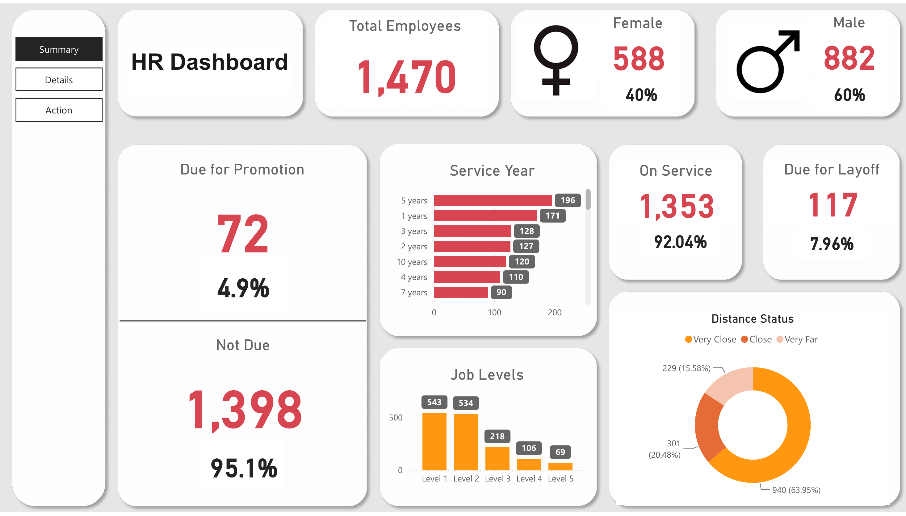
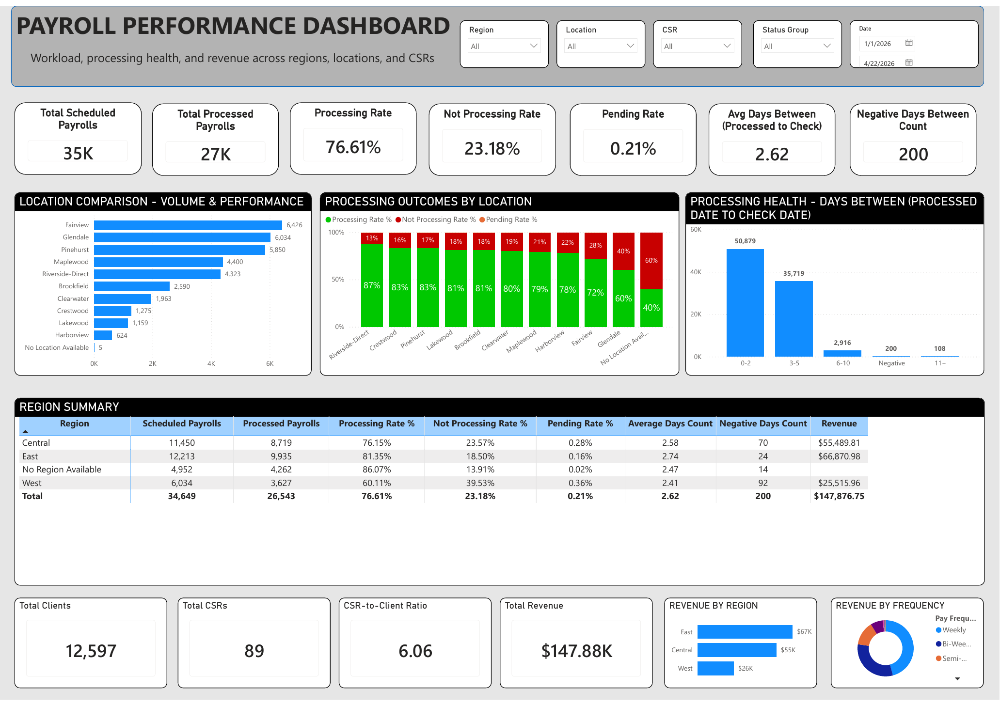

BI
Dashboard Development
Interactive Power BI dashboards, KPI scorecards, drill-through analysis, and executive reporting views.
I help teams turn disconnected data into clear Power BI dashboards, dependable reporting, and practical automation—so decision-makers spend less time chasing numbers and more time acting on them.
Open to remote opportunities, freelance projects, and BI consulting engagements.
Illustrative dashboard concept
Practical analytics and automation services for teams that need accurate reporting, clearer performance visibility, and more efficient processes.
Interactive Power BI dashboards, KPI scorecards, drill-through analysis, and executive reporting views.
Data extraction, transformation, validation, reconciliation, and reporting-ready datasets.
Automated refresh processes, recurring reports, notifications, and workflow improvements.
Bring operational and CRM data together to monitor sales, service, productivity, and business KPIs.
Lightweight Power Apps solutions for tracking, data capture, exception management, and approvals.
Maintain existing dashboards, troubleshoot refresh issues, improve report usability, and document logic.
Explore the practical tasks I can support with each platform. The logos link to recognizable technology brands; capabilities focus on analytics and reporting work.


Capability descriptions reflect analytics, reporting, and workflow experience. Salesforce is presented as CRM data analysis and reporting—not Salesforce administration or custom platform development.
A dedicated space for dashboard concepts and workflow demonstrations. These examples can be expanded with approved screenshots, walkthroughs, and project details.

A sample workforce overview designed to help teams monitor headcount, staffing trends, attendance, and key people metrics.

A sample reporting concept for monitoring payroll-related operational metrics, processing status, and exception trends.

A sample sales reporting concept to review revenue trends, pipeline movement, and performance across teams or segments.
I focus on understanding the business question first, then building reporting that is reliable, easy to use, and practical to maintain.
Understand the reporting goals, users, KPIs, data sources, and current pain points.
Assess source quality, transform data, validate business rules, and shape the reporting model.
Develop dashboards or workflows, test calculations, and review outputs with stakeholders.
Document key logic, support adoption, and identify opportunities for ongoing improvement.
Business intelligence and reporting experience supporting operational teams, performance management, and executive reporting.
I am a Business Intelligence and Reporting Analyst with hands-on experience maintaining operational dashboards, developing performance scorecards, preparing data, and supporting process automation. My work has covered productivity, audit operations, invoice capture, customer satisfaction, and management reporting.
I enjoy bridging the gap between raw data and business users—making information easier to understand, improving recurring reporting, and helping teams make decisions with confidence.
Let's discuss how dashboards, data preparation, or workflow automation can help your team improve visibility and reduce manual reporting effort.